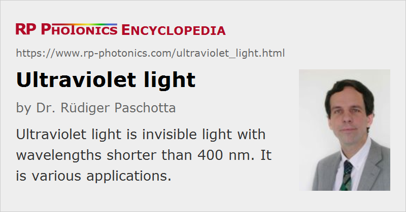

Ultraviolet Light
Acronym: UV light
Definition: invisible light with wavelengths shorter than ≈ 400 nm
More general terms: light
German: ultraviolettes Licht, Schwarzlicht
How to cite the article; suggest additional literature
Author: Dr. Rüdiger Paschotta
Ultraviolet light is light with a wavelength shorter than ≈ 400 nm, the lower limit of the visible wavelength range.
Different definitions are used for distinguishing different spectral regions:
- The near-UV spectral region ranges from 400 nm down to 300 nm. The middle-UV region ranges from 300 to 200 nm, and shorter wavelengths from 200 nm down to 10 nm belong to the far-UV region. Still shorter wavelengths belong to the extreme UV (EUV).
- The term vacuum UV (below ≈ 200 nm) refers to the wavelength range where a vacuum apparatus is often used, because the light is strongly absorbed in air. The vacuum UV includes the far and extreme UV.
- UVA stands for the range from 320 to 400 nm, UVB for 280–320 nm, and UVC for 200–280 nm.
However, the precise definitions of these spectral regions vary in the literature.
UV light finds a wide range of applications, including UV disinfection of water and tools, UV curing of adhesives, quality control for many materials and exciting fluorescence for analytical purposes.
Essential Properties of Ultraviolet Light
Compared with visible light, ultraviolet light is different in essentially two different respects:
- The short wavelength allows precise focusing and the generation of very fine structures (provided that a light source with high spatial coherence is used). This is utilized in UV photolithography, as used e.g. for the fabrication of microelectronic devices such as microprocessors and memory chips. Future generations of microprocessors will have even finer structures and will require photolithography in the EUV region. Powerful EUV sources and the corresponding photoresists are currently being developed.
- The photon energy is higher than the band gap energy of many substances. As a consequence, ultraviolet light is strongly absorbed by many substances, and the induced excitation can lead to changes in the chemical structure (e.g. breaking of bonds). This is important for laser material processing (e.g. for laser ablation, pulsed laser deposition, and for the fabrication of fiber Bragg gratings), and for sterilization of water or medical instruments. UV light can also damage the human skin (see below), and particularly UVC light has germicidal effects. When ultraviolet light interacts with trace hydrocarbons in air, it can lead to the deposition of organic films on nearby surfaces; such kind of photocontamination can e.g. degrade the quality of nonlinear crystals in UV laser sources.
Generation of Ultraviolet Light
The technology of lasers for the generation of ultraviolet light faces various challenges; nevertheless, there are a few kinds of ultraviolet lasers which can directly generate UV light: some bulk lasers (e.g. based on cerium-doped crystals such as Ce:LiCAF), fiber lasers, laser diodes (mostly GaN-based), dye lasers, excimer lasers, and free electron lasers. Another way of generating ultraviolet light is by nonlinear frequency conversion of the outputs of near-infrared lasers. The article on ultraviolet lasers gives more details.
There are also various gas discharge lamps, e.g. xenon lamps and xenon/mercury lamps, which can be used for specific UV spectral lines or as broadband UV sources. Besides, there are excimer lamps, used as quasi-monochromatic UV sources in pulsed or continuous-wave mode. Particularly for the EUV region, gas discharges e.g. with xenon or with tin vapor or laser-induced plasmas are used for generating UV radiation with high powers of multiple watts or even dozens of watts. All such sources do not emit highly coherent radiation.
Light-emitting diodes (UV LEDs) are also attracting interest for a range of applications, e.g. for water disinfection.
UV Optics
For handling UV light, special ultraviolet optics are required. A very high material quality in various respects is essential to avoid problems with parasitic absorption, scattering, degradation and others. See the article on ultraviolet optics for more details.
Detection of Ultraviolet Light
Various kinds of photodetectors can be used for the detection of ultraviolet light. These include devices based on the internal photoelectric effect, such as photodiodes, and others based on the external photoelectric effect, for example phototubes and photomultiplier tubes. Some of those are insensitive to visible and infrared light; they are called solar-blind photodetectors.
Safety Hazards
Ultraviolet light is dangerous for the eyes (particularly for wavelengths in the range 250–300 nm) and for the skin (particularly for 280–315 nm), because it can cause cataracts or photokeratitis of the eye's lens and skin cancer, apart from hyperpigmentation and erythema. Lower doses, not yet causing acute effects, can accelerate aging of the skin. Therefore, work with UV light sources, in particular with UV lasers, demands special precautions for laser safety. For example, UV beams in open optical setups usually have to be enclosed with metal tubes.
When working with ultraviolet light sources, one may require protective eyewear, clothing and gloves.
For wavelengths below about 260 nm, there is also the problem that ozone is generated in air. It may thus be necessary to remove the ozone with suitable additional devices or to avoid its generation by avoiding the presence of oxygen.
Suppliers
The RP Photonics Buyer's Guide contains 28 suppliers for ultraviolet light sources. Among them:
Questions and Comments from Users
Here you can submit questions and comments. As far as they get accepted by the author, they will appear above this paragraph together with the author’s answer. The author will decide on acceptance based on certain criteria. Essentially, the issue must be of sufficiently broad interest.
Please do not enter personal data here; we would otherwise delete it soon. (See also our privacy declaration.) If you wish to receive personal feedback or consultancy from the author, please contact him e.g. via e-mail.
By submitting the information, you give your consent to the potential publication of your inputs on our website according to our rules. (If you later retract your consent, we will delete those inputs.) As your inputs are first reviewed by the author, they may be published with some delay.
See also: nonlinear frequency conversion, frequency doubling, excimer lasers, laser safety, infrared light, ultraviolet optics, solar-blind photodetectors
and other articles in the category general optics
|  |
If you like this page, please share the link with your friends and colleagues, e.g. via social media: 


These sharing buttons are implemented in a privacy-friendly way! |
2020-04-26
Will far UV-C light sources become available to the public for killing germs and viruses? It has been found that such light does not damage the skin or the eyes.
Answer from the author:
Indeed, it appears to be an interesting idea that short-wavelength UV light (probably to be generated with excimer lamps) could be used for deactivating harmful germs e.g. in public rooms, apparently without causing negative health effects due to the very strong absorption of that light, e.g. in the tear layer on the human eye. However, I think it should first be extensively tested how effective that method really is and whether there are really no adverse health effects – e.g. by unwanted photochemical byproducts. It is at least conceivable that the method could be practical for widespread use.